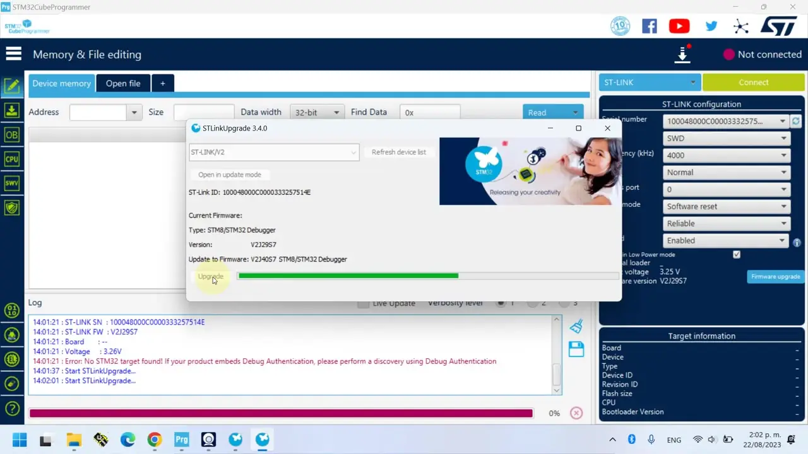

De los pines del ST-Link solo se usan cuatro: 3.3 V, SWDIO (datos), SWCLK (reloj) y GND. Deben coincidir con los del conector SWD de la tarjeta.
El clon alimenta la tarjeta por sí solo, sin cable USB.
Muchos ST-Link V2 clon recién comprados no conectan con la tarjeta y parecen dañados. En este video corto conectamos los cuatro pines (3.3 V, SWDIO, SWCLK y GND), vemos el error en STM32CubeProgrammer y lo solucionamos con Firmware upgrade. Después el programador lee el micro y carga un programa sin problema.

De los pines del ST-Link solo se usan cuatro: 3.3 V, SWDIO (datos), SWCLK (reloj) y GND. Deben coincidir con los del conector SWD de la tarjeta.
El clon alimenta la tarjeta por sí solo, sin cable USB.
En CubeProgrammer, con ST-LINK y Shared en Enabled, al dar Connect aparece Error: No STM32 target found. Parece que el programador no sirve.
Haz clic en Firmware upgrade (abajo a la derecha de la configuración del ST-Link).
Si no lo detecta, desconecta el ST-Link del USB, vuelve a conectarlo y pulsa Open in update mode.
Aparece la versión actual y la nueva. Pulsa Upgrade y espera a que termine con éxito.
Cierra la ventana de actualización y pulsa Connect: ahora sí lee el micro.
Open file → el .hex → Download. Al terminar, el LED de la tarjeta empieza a titilar.
El aviso de conexión perdida al final es normal después de cargar.
Si el micro estaba protegido, la lectura sale vacía o con error hasta que quites la protección.